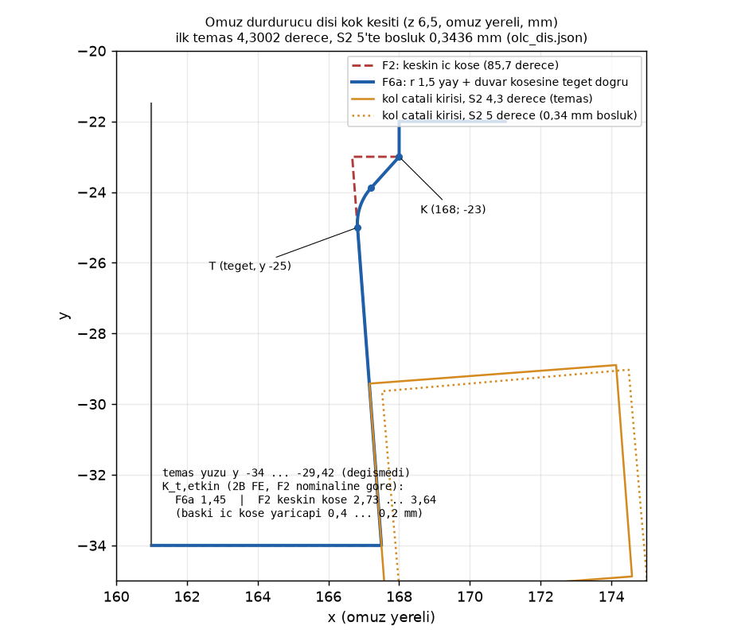
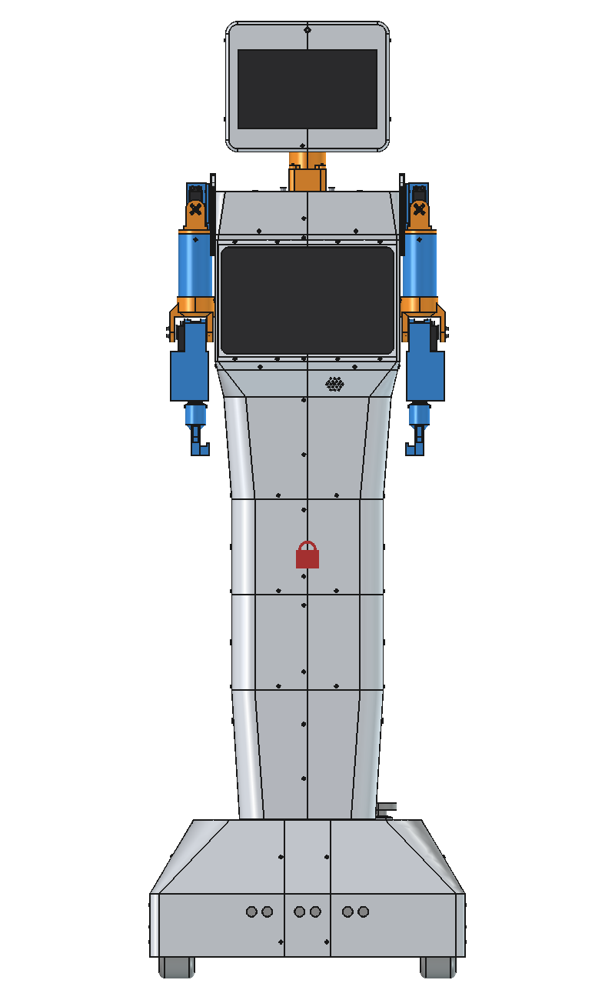
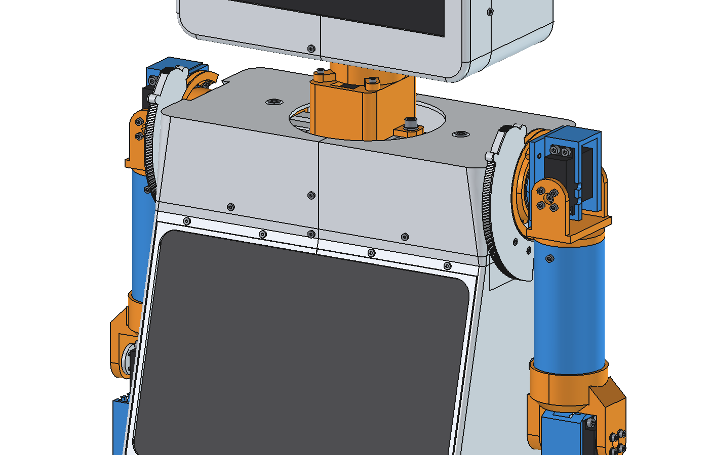
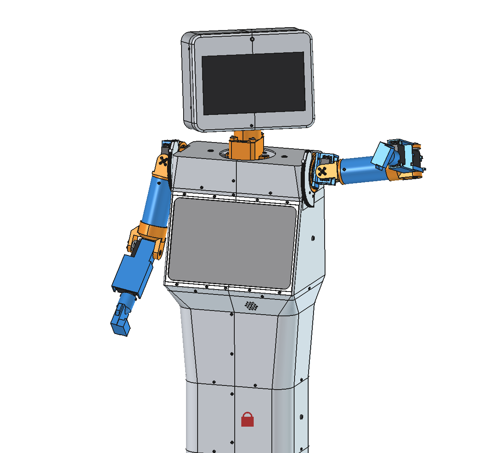

Lale F6a: tarama kaynakları temizliği, birikmiş model düzeltmeleri, tam çakışma taraması (P6.1, P4.5 kalanı)
Ajan C (ölçüm ve kayıt) · 09.11.2026 · dal lale-duzeltme · kaynaklar: F6a-brief.md, F6a-gunluk.md (§1–§10, düzeltme turları 1 ve 2), F6a-kontrol.md (son kontrol: GEÇER), carpisma-sonuc.json, regresyon.py, karar-kuyrugu.md K44–K45
kontrol 0--yazma GEÇER; omuz ve iskelet referansları yenilendiC'nin commit öncesi koşuları (PYTHONIOENCODING=utf-8, FreeCAD açılmadı): carpisma_kos.py kontrol çıkış 0 (üç kez: başta, referans kopyasından sonra, push'tan önce); regresyon.py --yazma çıkış 0, iki taban dosyasının sha1'i önce ve sonra aynı; F4c-dogrula.py çıkış 0 (1, 2, 3, 4a, 4b, 5a, 5b GEÇTİ). Takma ad araması, ad komut satırına ve dosyalara yazılmadan, büyük/küçük harf duyarsız alt dizge olarak yapıldı.
Kabul ölçütleri (C'nin koşuları)
| Ölçüt | Ölçülen | Kaynak | Durum |
|---|---|---|---|
| Tarama kaynaklarında takma ad | 0. git grep -il yalnız kapsam dışı 3 dosya: CLAUDE.md (K25), kod/ortak/eklem_sinirlari.json (K44), tasarim/freecad/index.html (K26) | git grep -il, push'tan önce | GEÇER |
tek_kosu | true · koşu 20261109-084522 (10:06:29–14:00:08); 9 bölümün hepsi aynı kimlik | carpisma-sonuc.json tek_kosu, bolumler.*.kosu | GEÇER |
| Eskimiş | 0 ("izlenen 17 dosyanin ozetleri kayitla ayni") | carpisma_kos.py kontrol çıkış 0 | GEÇER |
| Ev pozu çakışma | 0 ([]) | ev_pozu_cakisma | GEÇER |
| Eklem aralığında çakışma | 0 (kafa 0, taban 0); aralık dışı dahil toplam 364 (F2 ile aynı) | toplam.eklem_araliginda | GEÇER |
regresyon.py --yazma | çıkış 0, 10/10 "aynı" (tablo aşağıda) | taban 14:30:50 | GEÇER |
F4c-dogrula.py | çıkış 0; 72 adet, 7604,8–7662,4 g, 158,22–159,42 sa | düzeltme turu 1 sonrası | GEÇER |
| Diş kökü yarıçaplı, temas açısı korunmuş | z 6,5 kesitinde Circle r 1,5000; ilk temas 4,3002° → 4,3002°; 5°'te 0,3436 → 0,3436 mm | A olc_dis.json, B kendi FreeCAD ölçümü (C koşmadı) | GEÇER |
| Kesit kaydırması 4 yerde | kafa_lib, dirsek_lib, omuz_baski, uygulama_tani; kaydırılan katman 0 / 0 / 0 / 0 | analiz JSON'ları kesit_kaydirma | GEÇER |
eklem_sinirlari önerisi + fark | öneri üreticiyle bayt bayt aynı (6133 bayt); sayısal sınır farkı 0 | F6a-eklem_sinirlari-oneri.json | GEÇER |
| Regresyon referansları | öneri = yeni referans: omuz md5 26c1e48c…, iskelet 9b45698e… | md5sum, kopyadan sonra kontrol 0 | YENİLENDİ |
Regresyon değerleri (regresyon.py --yazma, 15:34)
| Değer | Taban | Şimdi | Eşik | Durum |
|---|---|---|---|---|
boy_mm | 1580 | 1580 | 1580 ± 0,05 | aynı |
cakisma_kafa_ici | 0 | 0 | 0 | aynı |
cakisma_kabuk_ici | 0 | 0 | 0 | aynı |
cakisma_kabuk_x_iskelet | 0 | 0 | 0 | aynı |
cakisma_ev_pozu | 0 | 0 | 0 | aynı |
rampa_yuksuz | 1,519 | 1,519 | ≥ 1,5 | aynı |
tilt_payi | 3,64 | 3,64 | ≥ 3 | aynı |
pan_payi | 2,21 | 2,21 | ≥ 2 | aynı |
mik_hoparlor_mm | 574,3 | 574,3 | ≥ 400 | aynı |
sy8205_x_usb_mm3 | 0 | 0 | 0 | aynı |
Sonuç: "GEÇER (hepsi okundu, kötüleşen yok)". Taban F6a A'nın 14:30:50 normal koşusundan (koşu kimliği 20261109-084522); 5. commit'te.
Önce / sonra: omuz durdurucu dişi
| F2 (keskin köşe) | F6a (kök yayı) | Kaynak | |
|---|---|---|---|
| Kök iç köşesi | 85,7° keskin, (166,673; −23) | r 1,5 yay y −25'te dişe teğet + (168; −23) duvar köşesine teğet doğru | olc_dis.json k_kok_dolgu |
| İlk temas (kol çatalı ↔ diş) | 4,3002° | 4,3002° | c_kol_x_durdurucu; B 4,3002 |
| S2 5°'te dişe boşluk | 0,3436 mm | 0,3436 mm | aynı |
| Temas yüzü | y −34…−29,42 | aynı (yüz kökte 2 mm kısaldı, temas şeridi dışında) | B madde 2c |
| En ince kesit | 5,673 mm (y −23) | 5,823 mm (y −25) | s_kesit_x_araliklari_z6_5 |
| K_t,etkin (2B FE, F2 nominaline göre) | 2,73 (baskı köşe r 0,4) … 3,64 (r 0,2) | 1,45 (ağ 0,08 / 0,04 / 0,02: 1,461 / 1,460 / 1,454) | kt_fem.json |
| Kol çatalı ↔ kök dolgusu | — | S2 0 / 4,3 / 5 / 10: 3,00 / 4,43 / 4,69 / 6,53 mm | B madde 2d |

planlama/d158/F6a-dis-kok.png.Darbe emniyeti (F2 yöntemi + K_t; F2 rijitlik varsayımı)
| Senaryo | Kuvvet (N) | F2 tablosu (K_t yok) | F2 keskin köşe (K_t 2,73…3,64) | F6a (K_t 1,45) | F6a, rijit … esnek |
|---|---|---|---|---|---|
| Stall, statik | 98,4 | 3,73 | 1,37 … 1,03 | 2,57 | 2,57 |
| 1,5 rad/s yüksüz | 364 | 2,24 | 0,82 … 0,62 | 1,54 | 0,84 … 1,65 |
| 1,5 rad/s, elde 500 g | 618 | 1,32 | 0,48 … 0,36 | 0,91 | 0,46 … 0,99 |
| Kaçak servo, yüksüz | 1526 | 0,54 | 0,20 … 0,15 | 0,37 | 0,18 … 0,40 |
| Kaçak servo, 500 g | 2886 | 0,28 | 0,10 … 0,08 | 0,19 | 0,09 … 0,21 |
| Güç kesik, S2 30°'den | 554 | 1,48 | 0,54 … 0,41 | 1,01 | 0,47 … 1,12 |
| Güç kesik, S2 90°'den | 1526 | 0,54 | 0,20 … 0,15 | 0,37 | 0,17 … 0,41 |
| Güç kesik, S2 120°'den | 1870 | 0,44 | 0,16 … 0,12 | 0,30 | 0,14 … 0,33 |
Bu bir kötüleşme değil: F2 tablosu K_t'siz nominal gerilmeyle hesaplanmıştı. Aynı FE ile keskin köşeli F2 geometrisinin gerçek emniyeti stall'da 1,0–1,4; kök yayı bunu 2,57'ye çıkarıyor (1,9–2,5 kat). Doğru okuma "K_t'li karşılaştırmada 1,0–1,4 → 2,57"; "3,73 → 2,57 düştü" değil (B, O-2). İzinli sınırlar K45'te.
Kütle
| Ölçü | Önce | Sonra | Kaynak |
|---|---|---|---|
| Omuz göbeği hacmi | 53.972,55 mm³ | 54.000,26 mm³ (+27,7) | robot-montaj.FCStd (B), omuz/regresyon/sonra.json |
| Omuz göbeği kütlesi | 61,691 g | 61,722 g (+0,031 / omuz) | montaj-analiz.json parcalar[91], [164] |
| Robot (montaj analizi) | 25.720,49 g | 25.720,55 g | montaj-analiz.json kutle_g |
| Robot (çakışma taraması) | 25.720,5 g | 25.720,6 g | carpisma-sonuc.json kutle_toplam_g |
| Göbek baskı satırı | 63,2–70,4 g | 63,3–70,4 g | Y2b-baski.json satirlar[58] |
| Baskı toplamı | 7604,6 g (CF 1158,0) | 7604,8 g (CF 1158,2) | Y2b-baski.json toplam |
İskelet ve taban analizlerindeki +4,9 g F2 dişinden kalma (dosyalar F2'den beri eskiydi); taban robot kütlesi 26.115,6 → 26.120,5 g, travers yükü 13,0234 → 13,0477 N.
Kesit kaydırma (P1.5 kalıbı, 4 yer)
| Dosya | Önceki davranış | Şimdi | Kaydırılan katman |
|---|---|---|---|
kafa/kafa_lib.py | hata → katman sessizce atlanır | kalıp + geçersiz yüzde de kaydırma; kesit_kaydirma | 0 (14 parça) |
dirsek/dirsek_lib.py | hata → katman sessizce atlanır | kalıbın birebir aynısı | 0 (4 parça) |
omuz/omuz_baski.py | hata / geçersiz → atlanan_kesit | kesit_k(); hep açıksa "kesit teli kapanmadi" destek sorunu | 0 (6 parça × 6 yön) |
lale158/kafa-yerlesim/uygulama_tani.py | makeFace hatası betiği durdururdu | kalıp; katman kaydında kaydirma | 0 (13 katman) |
Baskı sayıları değişmedi; eski "sessizce atla" yolu bu modelde hiç tetiklenmiyormuş. Kalıp artık gizli katman kaybını görünür kılıyor. Kenar durumu (en üst / en alt katmanda kesit boşsa iz bırakmadan çıkış) B'nin D-1 notunda; düzeltme gerekmiyor.
eklem_sinirlari farkı (öneri, kod/'a yazılmadı)
| Yer | Alan | Eski (kod/ortak/eklem_sinirlari.json) | Öneri (F6a-eklem_sinirlari-oneri.json) |
|---|---|---|---|
r_s2, l_s2 | neden | "alt sinir +5 (S1 kablo kaseti …, 5'te 0,77 mm); kabuk boslugu 0'da 4,7 mm, -3'te temas" | "alt sinir +5; mekanik durdurucu (omuz gobegi disi) 4,3'te dayanir, 5'te dise 0,34 mm; durdurucusuz ilk temas S1 tamburu 3,65, S1 kaset kapagi (kabuk) 3,21; kol <-> kabuk 5'te 1,36 mm, 4,3'te 0,83 mm" |
| ″ | bosluk_mm | {"0": 4.7, "-2": 0.6, "-3": 0.0} | {"5": 0.34, "4.3": 0.0} (anlamı değişti: kol ↔ kabuk yerine kol çatalı ↔ durdurucu dişi) |
| ″ | temas_derece (yeni) | — | {"durdurucu": 4.3, "s1_tambur": 3.65, "s1_kaset_kapagi": 3.21} |
teker | not_ | takma adlı karar notu | "… (karar 29 Ekim 2026, Ahmet; …)" |
Sayısal sınırlar (min/max bütün eklemlerde, bagimli, kafa_kol_yasak, teker.ivme_sinir_m_s2) değişmedi. py -3 kod/ortak/eklem_sinirlari_uret.py --kontrol "ESKI ya da yok" diyor (çıkış 1, beklenen). kod/ içinde bosluk_mm okuyan betik yok. Karar K44.
Regresyon referans yenilemesi (KT-F6a-3)
| Referans | Eski | Yeni (= öneri dosyası) | Başlıca farklar ve nedeni |
|---|---|---|---|
tasarim/freecad/omuz/regresyon/once.json | 14.10.2026 (a158211), md5 43f22355… | md5 26c1e48c… = F6a-regresyon-oneri/omuz-once.json | Parça 70 → 75 (S1 kablo kaseti; DS3218MG → DS3235; M6 pul kalktı); parça kütlesi 852,6 → 962,2 g (ρ × doluluk, DS3235, tambur, F2 dişi, F6a yayı); kol_gobek çakışan poz 8 → 11 (hepsi S2 alt sınır +5'in dışında); kol_govde 94 → 94; eklem aralığında çakışan poz 0 → 0; Kol-Gövde boşluğu 4,0 → 6,293 mm |
tasarim/freecad/iskelet/regresyon/once.json | 08.10.2026, md5 1238ab26… | md5 9b45698e… = F6a-regresyon-oneri/iskelet-once.json | 59 parça: 43 aynı, 15'i (travers + 14 bağlantı elemanı) +315 mm yukarıda; direk hacmi 581.402 → 810.186 mm³ (+228.784, 1,58 m uzaması UZAMA 315); toplam kütle 5793,1 → 6410,8 g; iç çakışma, bağlantılar ve ayrılmış bölge ihlali aynı |
B her farkı bir değişikliğe bağladı; açıklanmamış fark yok. Kopyadan sonra md5'ler öneriyle aynı, carpisma_kos.py kontrol yine 0 (referanslar tarama kaynağı değil). Öneri dosyaları silinmedi. Bundan sonra iki regresyon betiği "AYNI" der; yeni farklar F6a'ya göre ölçülür. Referanslar 2. commit'te, ürettikleri modül çıktılarıyla birlikte.
Düzeltme turları
| # | Bulgu (B) | Düzeltme | Sonuç |
|---|---|---|---|
| O-1 | F6a Y2b-baski.json'u yeniden üretti (göbek 63,2 → 63,3 g) ama F4c zincirini güncellemedi; commit'li F4c-dogrula.py 4b ve 5b'de kalıyordu | Tur 1: F4c-dogrula.py YAMA = [] (eski liste YAMA_F4C); K39 şablonları ve göbek satırı; F4c-partiler.py → F4c-liste.py → F4c-dogrula.py | kapandı doğrula çıkış 0; eski metin sayımı 0; fark toplamı −22,4 g |
| O-2 | "≤ 59 / 30°/s" yalnız F2 rijitliğinde emniyet 2; güç kesik düşme sınırı (10,6°) servo torku düşülerek yanlış hesaplanmış | Tur 1: servosuz düşme ve rijitlik aralığı yeniden hesaplandı, günlük ve karar taslağı daraltıldı | kapandı 15,5° / 20,4°; rijitte 27 / 14°/s, 59 / 30'da emniyet 1,14 |
| O-3 | Montaj görsellerinin kamerası eski boydan (+315 mm); 11 görselden 9'unda kafa / omuz kesik | Tur 2: kamera merkezleri A.BOY / 2 ve + A.UZAMA, yükseklik × TAM ≈ 1,29; tek ek GUI koşusu | kapandı 11/11 kadrajda (A ve B gözle) |
| D-8 | Poz görsellerinde kafa tilt 25° / 20°, sınır ±13 | Tur 2: poz-one ve poz-kafa tilt 12° | kapandı ihlal 0 |
Tur 1'de ayrıca D-4 kapandı: montaj_gorsel.py 29.10'dan beri koşmuyordu (KAFA_KOL_YASAK pasifken None); if Y.get("aktif") koruması, Kafa_Tilt 0,22 rad (±12,6°), Yana %.9f. Tarama kaynaklarına iki turda da dokunulmadı; kontrol her turdan sonra 0.
Montaj görselleri (düzeltme turu 2)

tasarim/freecad/montaj/gorsel/montaj-on.png
montaj-omuzlar.png
montaj-poz-selam.pngGörseller depodan göreli yolla bağlı, gömülü değil. Öteki 8 görsel (yan, izometrik, kafa, dirsek, taban, taban-ic, poz-one, poz-kafa) aynı klasörde. Dirsek görünümünde bilek ucu alt kenarda kesiliyor (D-11, konu dirsek olduğu için kabul).
Karar kuyruğu: K44–K45
| # | Karar | Sayılar | Seçenekler | Bloke |
|---|---|---|---|---|
| K44 | eklem_sinirlari.json'un kod/'a yazılması (KT-F6a-1) | Kaynak planlama/d158/F6a-eklem_sinirlari-oneri.json. Sayısal sınır farkı yok; S2 neden metni, bosluk_mm (anlamı değişti) ve yeni temas_derece; takma ad "Ahmet" ile değişiyor | a) Ahmet onayıyla kod/'a yazılır, Efe'ye pano bilgisi (önerilen); b) Efe'ye bırakılır. Not: yenilenene kadar kod/ dosyasında takma ad herkese açık dalda duruyor | kod/ dosyasının güncelliği, P4.5'in kod/ kalanı, K2/K3 regresyon betikleri |
| K45 | S2 darbe hız sınırı (KT-F6a-2); K38'i sayısallaştırır | F2 rijitlik varsayımında emniyet 2 için ≤ 59°/s yüksüz, ≤ 30°/s 500 g ile. Rijit uçta 27 / 14°/s gerekiyor; 59 / 30°/s'de emniyet 1,14. Güç kesikken düşme sınırı 15,5° / 20,4° (emniyet 2 / 1,5; rijitte 8,1° / 10,2°). Yük uca kayarsa ≈ 40 / 20°/s | a) tutucu 27 / 14°/s; b) 59 / 30°/s + rijitlik ölçümü; c) karar baskı kuponu testine kadar beklesin. Önerilen varsayılan kayıtta yok | K38, kod/ hareket planlayıcısı, K39 ölçümünün yorumu |
K38'e ve K39'a "F6a notu" eklendi (kök yarıçapı r 1,5 uygulandı, K_t 1,45, K45'e bakın; K39'da DS3235 düşme ölçümü açık). KT-F6a-3 (referanslar bu pakette yenilendi), KT-F6a-4 (F4c betikleri, tur 1) ve KT-F6a-5 (montaj_gorsel koruması, tur 1) "Karar değil, iş" altında kapandı. Karar kuyruğu şimdi açık 40 / 45. Hepsi Ahmet'in kararı; döngü varsayılanla ilerlemez.
Açık kalanlar
- K44 / K45 Ahmet'te. K44 yapılana kadar
kod/ortak/eklem_sinirlari.jsoneski ve takma adlı teker notunu taşıyor. - Göğüs ekranı port girintisi: ekran ölçülünce (
arayuz.GOGUS_EKRAN["port"], kasa girintisi velale158_kontrolhariç tutma kutusu birlikte). - Montaj GIF'i ve GUI ekranları:
montaj-hareket.gif(14.10,montaj_rapor.pyüretir) ve 5montaj-gui-*.png(09.10, elle) yenilenmedi (D-10). - Dilimleyicide kök yayı önizlemesi baskıdan önce: r 1,5 yay yaklaşık 7 katmanla çiziliyor; diş tabanı desteği (+Y bölge 7 → 8). Katman basamakları ek yerel çentik getirir (A6).
- FCStd'nin GUI'de açılıp eklem görünümünün gözle doğrulanması (A9): başsız okuma temiz; GUI günlüğündeki 84 traceback FreeCAD Assembly içinden, ölümcül değil (D-9).
- Düşük bilgi notları:
dirsek_rapor.py:197"(omuz S2 ile aynı çözüm)" ifadesi yanlış (D-3, sonraki rapor güncellemesinde); çakışma kaynak özeti satır sonuna duyarlı (D-7: checkout / stash / temiz klonkontrol'ü "eski" yapar);eklem-dogrulama.jsonS2'yi [0, 120] kullanıyor (A8); iki kamera tabanı elle ayarlı (D-11); FCStd'lerde GUI verisi (D-6). - K23: 13 kabuk PNG'si (F6a yeniden üretti, geometri değişmedi) ve
montaj/yerlesim-kontrol.jsoncommit dışında; karar Ahmet'te.
Kayıt
| Commit | Konu | Dosya |
|---|---|---|
647cafc | Kaynak + tarama: diş kökü r 1,5, kesit kaydırma (4), arayuz.py (S2 metni, yana_alt_bosluk_mm), yorumlar, takma ad (8 tarama kaynağı), baski_listesi_guncelle.py yaması; carpisma-sonuc.json + 9 bölüm | 22 |
a051281 | Modül çıktıları (analiz, FCStd, STEP, göbek STL, uygulama-*, lale158-kontrol, 64 modül PNG'si) + omuz ve iskelet regresyon referansları | 93 |
4d1898a | F4c / baskı listesi: Y2b-baski.json, baski-listesi.md, F4c-dogrula/liste/partiler.py, F4c-partiler.json/.md | 7 |
684f4f2 | Montaj: montaj_gorsel.py, GUI'li robot-montaj.FCStd, 11 montaj PNG'si | 13 |
a98de2d | planlama/d158: F6a günlüğü, kontrol, eklem sınırları ve regresyon önerileri, diş kökü görseli, regresyon tabanı; karar-kuyrugu.md (K44–K45); dongu-158.md | 10 |
Push: e796f15..a98de2d lale-duzeltme → lale-duzeltme (1. ve 2. commit aynı push'ta). Toplam 145 dosya, her commit açık git add listesiyle; her commit'ten önce staged içerikte (eklenen satırlar ve blob'lar) takma ad 0, başka öğrenci / danışman soyadı 0. F6a-brief.md zaten f7ed8c4'te. Dışarıda: K23 (13 kabuk PNG + montaj/yerlesim-kontrol.json), kvkk/, rapor/, raporlar/, tubitak-2209b/, tasarim/solidworks/, kafa-yerlesim/kaynak/, lale_dongu.*, F5-pano-govde.txt, F5b-pano-govde.txt. Bu rapor ayrı commit'te.